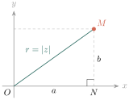
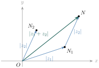
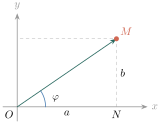
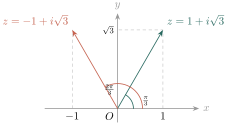
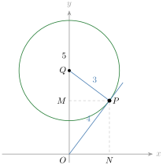
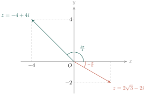
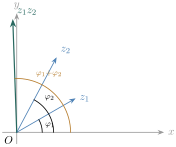
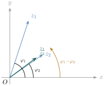
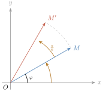
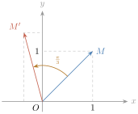

- គណនាម៉ូឌុល និងអាគុយម៉ង់នៃចំនួនកុំផ្លិច
- ស្គាល់ទម្រង់ត្រីកោណមាត្រនៃចំនួនកុំផ្លិច
- គណនាផលគុណ និងផលចែកនៃចំនួនកុំផ្លិចដែលមានទម្រង់ត្រីកោណមាត្រ
- កំណត់រូបភាពនៃចំនួនកុំផ្លិច \(\displaystyle z\) តាមបំប្លែងវិល ។
1. ម៉ូឌុលនៃចំនួនកុំផ្លិច
គេឱ្យចំនួនកុំផ្លិច \(\displaystyle z = a + bi\) និងចំណុច \(\displaystyle M\) ជារូបភាពនៃ \(\displaystyle z\) ក្នុងប្លង់កុំផ្លិច \(\displaystyle (xOy)\) ។ \(\displaystyle OM\) ហៅថា ម៉ូឌុល នៃចំនួនកុំផ្លិច ។ យើងនឹងគណនាម៉ូឌុលនេះ ។
តាមរូបភាពខាងក្រោម យើងឃើញថាត្រីកោណ \(\displaystyle OMN\) កែងត្រង់ \(\displaystyle N\) ។

តាមទ្រឹស្តីបទពីតាគ័រ គេបាន \(\displaystyle OM^2 = ON^2 + NM^2 = a^2 + b^2\) ។ ដូច្នេះ \(\displaystyle OM = \sqrt{a^2 + b^2}\) ។
គេតាងម៉ូឌុលនៃ \(\displaystyle z\) ដោយ \(\displaystyle |z|\) ហើយគេកំណត់សរសេរ
ឧទាហរណ៍ : បើចំនួនកុំផ្លិច \(\displaystyle z = 4 - 3i\) នោះគេបាន \(\displaystyle |z| = \sqrt{4^2 + (-3)^2} = \sqrt{25} = 5\) ។
គេអាចតាងម៉ូឌុលនៃចំនួនកុំផ្លិច \(\displaystyle a + bi\) ដោយ \(\displaystyle |a + bi|\) ។
គេឱ្យចំនួនកុំផ្លិច \(\displaystyle z_1 = -1 - 2i\) និង \(\displaystyle z_2 = -4i\) ។ គណនា \(\displaystyle |z_1|\) និង \(\displaystyle |z_2|\) ។
\(\displaystyle |z_1| = \sqrt{(-1)^2 + (-2)^2} = \sqrt{5}\)
\(\displaystyle |z_2| = \sqrt{0^2 + (-4)^2} = 4\) ។
គណនាម៉ូឌុលនៃចំនួនកុំផ្លិច \(\displaystyle 2 + 2\sqrt{3}\,i\) និង \(\displaystyle -1 - i\) ។
មើលចម្លើយ
\(\displaystyle |2 + 2\sqrt{3}\,i| = \sqrt{4 + 12} = 4\) និង \(\displaystyle |-1 - i| = \sqrt{1 + 1} = \sqrt{2}\) ។
លក្ខណៈម៉ូឌុលនៃចំនួនកុំផ្លិច
ឧទាហរណ៍ 1 : គេមានចំនួនកុំផ្លិច \(\displaystyle z = 3 - 4i\) ។ គណនា \(\displaystyle |z|\), \(\displaystyle |\bar{z}|\) និង \(\displaystyle |-z|\) ។
\(\displaystyle z = 3 - 4i \Rightarrow |z| = \sqrt{3^2 + (-4)^2} = \sqrt{9 + 16} = 5\)
\(\displaystyle \bar{z} = 3 + 4i \Rightarrow |\bar{z}| = \sqrt{3^2 + 4^2} = \sqrt{9 + 16} = 5\)
\(\displaystyle -z = -3 + 4i \Rightarrow |-z| = \sqrt{(-3)^2 + 4^2} = \sqrt{9 + 16} = 5\) ។
៖ បើ \(\displaystyle z\) ជាចំនួនកុំផ្លិច នោះ \(\displaystyle |z| = |\bar{z}| = |-z|\) ។
ឧទាហរណ៍ 2 : គេមានចំនួនកុំផ្លិច \(\displaystyle z = 2 - i\) ។ គណនា \(\displaystyle |z|^2\) និង \(\displaystyle z \cdot \bar{z}\) ។
គេបាន \(\displaystyle \bar{z} = 2 + i\) ។ \(\displaystyle |z| = \sqrt{2^2 + (-1)^2} = \sqrt{5}\) ដូច្នេះ \(\displaystyle |z|^2 = (\sqrt{5})^2 = 5\) ។
\(\displaystyle z \cdot \bar{z} = (2 - i)(2 + i) = 4 + 1 = 5\) ។
៖ បើ \(\displaystyle z\) ជាចំនួនកុំផ្លិច នោះ \(\displaystyle |z|^2 = z \cdot \bar{z}\) ។
ឧទាហរណ៍ 3 : គណនា \(\displaystyle |z_1| \cdot |z_2|\) និង \(\displaystyle |z_1 \cdot z_2|\) បើ \(\displaystyle z_1 = 1 - i\) និង \(\displaystyle z_2 = 2 + i\) ។
\(\displaystyle |z_1| = \sqrt{1^2 + (-1)^2} = \sqrt{2}\) និង \(\displaystyle |z_2| = \sqrt{2^2 + 1^2} = \sqrt{5}\) ។ គេបាន \(\displaystyle |z_1| \cdot |z_2| = \sqrt{2} \times \sqrt{5} = \sqrt{10}\) ។
\(\displaystyle z_1 \cdot z_2 = (1 - i)(2 + i) = 2 + i - 2i - i^2 = 3 - i\) (ដោយ \(\displaystyle i^2 = -1\)) ។
\(\displaystyle |z_1 \cdot z_2| = \sqrt{3^2 + (-1)^2} = \sqrt{10}\) ។
៖ បើ \(\displaystyle z_1\) និង \(\displaystyle z_2\) ជាចំនួនកុំផ្លិច នោះ \(\displaystyle |z_1 \cdot z_2| = |z_1| \cdot |z_2|\) ។
ឧទាហរណ៍ 4 : គណនា \(\displaystyle \dfrac{|z_1|}{|z_2|}\) និង \(\displaystyle \left|\dfrac{z_1}{z_2}\right|\) បើគេឱ្យ \(\displaystyle z_1 = 3 + i\) និង \(\displaystyle z_2 = 1 - i\) ។
\(\displaystyle |z_1| = \sqrt{3^2 + 1^2} = \sqrt{10}\) និង \(\displaystyle |z_2| = \sqrt{1^2 + (-1)^2} = \sqrt{2}\) ។ គេបាន \(\displaystyle \dfrac{|z_1|}{|z_2|} = \dfrac{\sqrt{10}}{\sqrt{2}} = \sqrt{5}\) ។
\(\displaystyle \dfrac{z_1}{z_2} = \dfrac{3 + i}{1 - i} = \dfrac{(3 + i)(1 + i)}{(1 - i)(1 + i)} = \dfrac{3 + 3i + i + i^2}{1 + 1} = \dfrac{2 + 4i}{2} = 1 + 2i\) ។
គេបាន \(\displaystyle \left|\dfrac{z_1}{z_2}\right| = \sqrt{1^2 + 2^2} = \sqrt{5}\) ។
៖ បើ \(\displaystyle z_1\) និង \(\displaystyle z_2\) ជាចំនួនកុំផ្លិច នោះគេបាន \(\displaystyle \left|\dfrac{z_1}{z_2}\right| = \dfrac{|z_1|}{|z_2|}\) (ចំពោះ \(\displaystyle z_2 \ne 0\)) ។
ឧទាហរណ៍ 5 : គណនា \(\displaystyle |z_1| + |z_2|\) និង \(\displaystyle |z_1 + z_2|\) បើគេដឹងថា \(\displaystyle z_1 = 3 - 4i\) និង \(\displaystyle z_2 = -1 - i\sqrt{3}\) ។
\(\displaystyle |z_1| = \sqrt{3^2 + (-4)^2} = \sqrt{9 + 16} = 5\) ; \(\displaystyle |z_2| = \sqrt{(-1)^2 + (-\sqrt{3})^2} = \sqrt{1 + 3} = 2\) ។ គេបាន \(\displaystyle |z_1| + |z_2| = 5 + 2 = 7\) ។
\(\displaystyle z_1 + z_2 = 3 - 4i + (-1 - i\sqrt{3}) = 2 + (-4 - \sqrt{3})i\) ។
\(\displaystyle |z_1 + z_2| = \sqrt{4 + (-4 - \sqrt{3})^2} = \sqrt{4 + 16 + 8\sqrt{3} + 3} = \sqrt{23 + 8\sqrt{3}} < 7\) (ព្រោះ \(\displaystyle 23 + 8\sqrt{3} \approx 36{,}86 < 49\)) ។
៖ បើ \(\displaystyle z_1\) និង \(\displaystyle z_2\) ជាចំនួនកុំផ្លិច នោះ \(\displaystyle |z_1 + z_2| \le |z_1| + |z_2|\) ។
ម្យ៉ាងទៀត គេអាចបកស្រាយតាមន័យធរណីមាត្រ ៖ គេមានចំនួនកុំផ្លិច \(\displaystyle z_1\) និង \(\displaystyle z_2\) ដែលមានរូបភាពរៀងគ្នា \(\displaystyle N_1\) និង \(\displaystyle N_2\) ។ \(\displaystyle N\) ជាចំណុចដែលកំណត់ដោយ \(\displaystyle \overrightarrow{N_1N} = \overrightarrow{ON_2}\) ។

\(\displaystyle ON_1 = |z_1|\) និង \(\displaystyle N_1N = ON_2 = |z_2|\) ។ \(\displaystyle N\) ជារូបភាពនៃ \(\displaystyle z_1 + z_2\) ហើយ \(\displaystyle ON = |z_1 + z_2|\) ។ តាមវិសមភាពក្នុងត្រីកោណ \(\displaystyle ON_1N\) គេបាន \(\displaystyle ON \le ON_1 + N_1N\) ។ ដូច្នេះ \(\displaystyle |z_1 + z_2| \le |z_1| + |z_2|\) ។
បង្ហាញថា \(\displaystyle |z| = |\bar{z}| = |-z|\) និង \(\displaystyle |z|^2 = z \cdot \bar{z}\) បើគេឱ្យចំនួនកុំផ្លិច \(\displaystyle z = -1 + i\sqrt{3}\) ។
\(\displaystyle z = -1 + i\sqrt{3}\) គេបាន \(\displaystyle \bar{z} = -1 - i\sqrt{3}\) និង \(\displaystyle -z = 1 - i\sqrt{3}\) ។
\(\displaystyle |z| = \sqrt{(-1)^2 + (\sqrt{3})^2} = \sqrt{1 + 3} = 2\) ; \(\displaystyle |\bar{z}| = \sqrt{(-1)^2 + (-\sqrt{3})^2} = 2\) ; \(\displaystyle |-z| = \sqrt{1^2 + (-\sqrt{3})^2} = 2\) ។ ដូច្នេះ \(\displaystyle |z| = |\bar{z}| = |-z|\) ។
\(\displaystyle |z|^2 = 2^2 = 4\) ហើយ \(\displaystyle z \cdot \bar{z} = (-1 + i\sqrt{3})(-1 - i\sqrt{3}) = (-1)^2 - (i\sqrt{3})^2 = 1 + 3 = 4\) ។ ដូច្នេះ \(\displaystyle |z|^2 = z \cdot \bar{z}\) ។
គេមានចំនួនកុំផ្លិច \(\displaystyle z_1 = -1 + 2i\) និង \(\displaystyle z_2 = 1 + i\) ។ ផ្ទៀងផ្ទាត់ថា
ក. \(\displaystyle |z_1 z_2| = |z_1| \cdot |z_2|\) ខ. \(\displaystyle \left|\dfrac{z_1}{z_2}\right| = \dfrac{|z_1|}{|z_2|}\) គ. \(\displaystyle |z_1 + z_2| \le |z_1| + |z_2|\) ។
ក. \(\displaystyle |z_1| = \sqrt{(-1)^2 + 2^2} = \sqrt{5}\) ; \(\displaystyle |z_2| = \sqrt{1^2 + 1^2} = \sqrt{2}\) ។ គេបាន \(\displaystyle |z_1| \cdot |z_2| = \sqrt{5} \times \sqrt{2} = \sqrt{10}\) (1) ។
\(\displaystyle z_1 z_2 = (-1 + 2i)(1 + i) = -1 - i + 2i + 2i^2 = -3 + i\) ; \(\displaystyle |z_1 z_2| = \sqrt{(-3)^2 + 1^2} = \sqrt{10}\) (2) ។
ដូច្នេះ តាមទំនាក់ទំនង (1) និង (2) \(\displaystyle \Rightarrow |z_1 z_2| = |z_1| \cdot |z_2|\) ។
ខ. \(\displaystyle \dfrac{z_1}{z_2} = \dfrac{(-1 + 2i)(1 - i)}{(1 + i)(1 - i)} = \dfrac{-1 + i + 2i - 2i^2}{1 + 1} = \dfrac{1 + 3i}{2} = \dfrac{1}{2} + \dfrac{3}{2}i\) ។
\(\displaystyle \left|\dfrac{z_1}{z_2}\right| = \sqrt{\dfrac{1}{4} + \dfrac{9}{4}} = \dfrac{\sqrt{10}}{2}\) (1) ; \(\displaystyle \dfrac{|z_1|}{|z_2|} = \dfrac{\sqrt{5}}{\sqrt{2}} = \dfrac{\sqrt{10}}{2}\) (2) ។
ដូច្នេះ តាមទំនាក់ទំនង (1) និង (2) \(\displaystyle \Rightarrow \left|\dfrac{z_1}{z_2}\right| = \dfrac{|z_1|}{|z_2|}\) ។
គ. \(\displaystyle z_1 + z_2 = -1 + 2i + (1 + i) = 3i\) ; \(\displaystyle |z_1 + z_2| = \sqrt{0^2 + 3^2} = 3\) (1) ។
\(\displaystyle |z_1| + |z_2| = \sqrt{5} + \sqrt{2} \approx 3{,}65 > 3\) (2) ។ ដូច្នេះ តាមទំនាក់ទំនង (1) និង (2) \(\displaystyle \Rightarrow |z_1 + z_2| \le |z_1| + |z_2|\) ។
គេមានចំនួនកុំផ្លិច \(\displaystyle z = 2 - i\) ។ ផ្ទៀងផ្ទាត់ថា \(\displaystyle |z| = |\bar{z}| = |-z|\) ។
មើលចម្លើយ
\(\displaystyle \bar{z} = 2 + i\) និង \(\displaystyle -z = -2 + i\) ។ \(\displaystyle |z| = \sqrt{4 + 1} = \sqrt{5}\) ; \(\displaystyle |\bar{z}| = \sqrt{4 + 1} = \sqrt{5}\) ; \(\displaystyle |-z| = \sqrt{4 + 1} = \sqrt{5}\) ។ ដូច្នេះ \(\displaystyle |z| = |\bar{z}| = |-z|\) ។
គេមានចំនួនកុំផ្លិច \(\displaystyle z_1 = 2 + i\) និង \(\displaystyle z_2 = -1 - i\) ។ ផ្ទៀងផ្ទាត់ថា
ក. \(\displaystyle |z_1 z_2| = |z_1| \cdot |z_2|\) ខ. \(\displaystyle \left|\dfrac{z_1}{z_2}\right| = \dfrac{|z_1|}{|z_2|}\) គ. \(\displaystyle |z_1 + z_2| \le |z_1| + |z_2|\) ។
មើលចម្លើយ
\(\displaystyle |z_1| = \sqrt{5}\) និង \(\displaystyle |z_2| = \sqrt{2}\) ។
ក. \(\displaystyle z_1 z_2 = (2 + i)(-1 - i) = -2 - 2i - i - i^2 = -1 - 3i\) ; \(\displaystyle |z_1 z_2| = \sqrt{1 + 9} = \sqrt{10} = \sqrt{5} \cdot \sqrt{2}\) ។
ខ. \(\displaystyle \dfrac{z_1}{z_2} = \dfrac{(2 + i)(-1 + i)}{(-1 - i)(-1 + i)} = \dfrac{-2 + 2i - i + i^2}{2} = \dfrac{-3 + i}{2}\) ; \(\displaystyle \left|\dfrac{z_1}{z_2}\right| = \dfrac{\sqrt{9 + 1}}{2} = \dfrac{\sqrt{10}}{2} = \dfrac{\sqrt{5}}{\sqrt{2}}\) ។
គ. \(\displaystyle z_1 + z_2 = 1\) ; \(\displaystyle |z_1 + z_2| = 1 \le \sqrt{5} + \sqrt{2}\) ។
2. អាគុយម៉ង់នៃចំនួនកុំផ្លិច
គេមានចំនួនកុំផ្លិច \(\displaystyle z = a + bi\) ស្ថិតនៅក្នុងប្លង់កុំផ្លិច ។ តាងវ៉ិចទ័រ \(\displaystyle \overrightarrow{OM}\) ជារូបភាពនៃ \(\displaystyle z\) ។ ម៉ុំដែលកំណត់ដោយ \(\displaystyle (\overrightarrow{Ox}, \overrightarrow{OM})\) ហៅថា អាគុយម៉ង់ នៃចំនួនកុំផ្លិច \(\displaystyle z\) តាងដោយ \(\displaystyle \arg z\) ។ បើ \(\displaystyle \varphi\) ជាអាគុយម៉ង់មួយនៃ \(\displaystyle z\) នោះគេបាន

\(\displaystyle N\) ជាចំណុចលោះកែងនៃចំណុច \(\displaystyle M\) លើអ័ក្សពិត \(\displaystyle (Ox)\) ក្នុងត្រីកោណកែង \(\displaystyle OMN\) កែងត្រង់ \(\displaystyle N\) គេបាន
ដូច្នេះ ដើម្បីរកអាគុយម៉ង់នៃ \(\displaystyle z\) យើងត្រូវដោះស្រាយប្រព័ន្ធសមីការ
ចំនួនកុំផ្លិច \(\displaystyle z = 0\) គ្មានអាគុយម៉ង់ទេ ។
ឧទាហរណ៍ 1 : រកអាគុយម៉ង់នៃចំនួនកុំផ្លិច \(\displaystyle z = 1 + i\sqrt{3}\) ។
\(\displaystyle z = 1 + i\sqrt{3}\) ដែល \(\displaystyle a = 1\) និង \(\displaystyle b = \sqrt{3}\) ។ គេបាន \(\displaystyle r = \sqrt{1^2 + (\sqrt{3})^2} = 2\) ។
\(\displaystyle \cos\varphi = \dfrac{a}{r} = \dfrac{1}{2}\) ហើយ \(\displaystyle \sin\varphi = \dfrac{b}{r} = \dfrac{\sqrt{3}}{2}\) ។ ដូច្នេះ \(\displaystyle \varphi = \dfrac{\pi}{3}\) ។
ដូច្នេះ \(\displaystyle \arg z = \dfrac{\pi}{3} + 2k\pi\), \(\displaystyle k \in \mathbb{Z}\) ។
ឧទាហរណ៍ 2 : រកអាគុយម៉ង់នៃចំនួនកុំផ្លិច \(\displaystyle z = -1 + i\sqrt{3}\) ។
\(\displaystyle z = -1 + i\sqrt{3}\) ដែល \(\displaystyle a = -1\) និង \(\displaystyle b = \sqrt{3}\) ។ គេបាន \(\displaystyle r = \sqrt{(-1)^2 + (\sqrt{3})^2} = 2\) ។
\(\displaystyle \cos\varphi = \dfrac{a}{r} = -\dfrac{1}{2}\) ហើយ \(\displaystyle \sin\varphi = \dfrac{b}{r} = \dfrac{\sqrt{3}}{2}\) ។
យើងឃើញថាក្នុងរង្វង់ត្រីកោណមាត្រ \(\displaystyle \cos\varphi = -\dfrac{1}{2} < 0\) និង \(\displaystyle \sin\varphi = \dfrac{\sqrt{3}}{2} > 0\) ត្រូវស្ថិតក្នុងកាដ្រង់ទី \(\displaystyle 2\) ។ ដូច្នេះ \(\displaystyle \varphi = \dfrac{2\pi}{3}\) ។
ដូច្នេះ \(\displaystyle \arg z = \dfrac{2\pi}{3} + 2k\pi\), \(\displaystyle k \in \mathbb{Z}\) ។

គេមានចំនួនកុំផ្លិច \(\displaystyle z = \cos a - i\sin a\) ។ គណនាអាគុយម៉ង់នៃ \(\displaystyle z\) ។
\(\displaystyle z = \cos a - i\sin a\) មាន \(\displaystyle r = \sqrt{(\cos a)^2 + (\sin a)^2} = 1\) ។ \(\displaystyle \cos\varphi = \cos a\) និង \(\displaystyle \sin\varphi = -\sin a\) ។
ប៉ុន្តែ \(\displaystyle \cos a = \cos(-a)\) និង \(\displaystyle -\sin a = \sin(-a)\) ។ ដូច្នេះ \(\displaystyle \arg z = -a + 2k\pi\), \(\displaystyle k \in \mathbb{Z}\) ។
គេមានចំនួនកុំផ្លិច \(\displaystyle z\) ដែលបំពេញលក្ខខណ្ឌ \(\displaystyle |z - 5i| = 3\) ។ ក្នុងចំណោមចំនួនទាំងនោះ រកចំនួនកុំផ្លិច \(\displaystyle z\) ដែលមានអាគុយម៉ង់វិជ្ជមានតូចបំផុត ។
តាងចំនួនកុំផ្លិច \(\displaystyle z = x + yi\), \(\displaystyle x\) និង \(\displaystyle y\) ជាចំនួនពិត ។ គេបាន
ជារង្វង់ដែលមានផ្ចិត \(\displaystyle (0, 5)\) និងកាំស្មើនឹង \(\displaystyle 3\) ។
ដើម្បីរកចំណុចតាងឱ្យចំនួនកុំផ្លិច \(\displaystyle z\) ដែលមានអាគុយម៉ង់វិជ្ជមានតូចបំផុត យើងត្រូវគូសបន្ទាត់ប៉ះ \(\displaystyle OP\) ទៅនឹងរង្វង់ (\(\displaystyle P\) ជាចំណុចប៉ះក្នុងចតុកោណទី \(\displaystyle 1\)) ។

តាង \(\displaystyle Q\) ជាផ្ចិតនៃរង្វង់ ។ តាមចំណុចប៉ះ \(\displaystyle P\) គូសចំណោលកែងលើអ័ក្ស \(\displaystyle (Ox)\) ត្រង់ \(\displaystyle N\) និងលើអ័ក្ស \(\displaystyle (Oy)\) ត្រង់ \(\displaystyle M\) ។ ត្រីកោណ \(\displaystyle OPQ\) កែងត្រង់ \(\displaystyle P\) ដូច្នេះ \(\displaystyle OP^2 = OQ^2 - PQ^2 = 25 - 9 = 16\) គឺ \(\displaystyle OP = 4\) ។
ក្នុងត្រីកោណកែង \(\displaystyle MPQ\) កែងត្រង់ \(\displaystyle M\) គេបាន \(\displaystyle MP^2 = 9 - QM^2\) (1) ។ ក្នុងត្រីកោណកែង \(\displaystyle MPO\) កែងត្រង់ \(\displaystyle M\) គេបាន \(\displaystyle MP^2 = 16 - MO^2\) (2) ។
តាម (1) និង (2) : \(\displaystyle 9 - QM^2 = 16 - MO^2\) នាំឱ្យ \(\displaystyle MO^2 - QM^2 = 7\) (3) ។ ដោយ \(\displaystyle QM + MO = 5 \Rightarrow MO = 5 - QM\) ។ សមីការ (3) អាចសរសេរ \(\displaystyle (5 - QM)^2 - QM^2 = 7\) គឺ \(\displaystyle 25 - 10QM = 7 \Rightarrow QM = \dfrac{9}{5}\) ។
\(\displaystyle MP^2 = 9 - \dfrac{81}{25} = \dfrac{144}{25} \Rightarrow MP = \dfrac{12}{5}\) ។ \(\displaystyle ON = MP = \dfrac{12}{5}\) ហើយ \(\displaystyle OM = OQ - QM = 5 - \dfrac{9}{5} = \dfrac{16}{5}\) ។
ដូច្នេះ ចំណុច \(\displaystyle P\left(\dfrac{12}{5}, \dfrac{16}{5}\right)\) ជារូបភាពនៃចំនួនកុំផ្លិច \(\displaystyle z = \dfrac{12}{5} + i\dfrac{16}{5}\) ដែលជាចំនួនកុំផ្លិចមានអាគុយម៉ង់វិជ្ជមានតូចបំផុត ។ (ផ្ទៀងផ្ទាត់ ៖ \(\displaystyle |z| = \sqrt{\frac{144 + 256}{25}} = 4\) ។)
គណនាអាគុយម៉ង់នៃចំនួនកុំផ្លិច \(\displaystyle -i\) និង \(\displaystyle -1 + i\) ។
មើលចម្លើយ
\(\displaystyle -i\) មាន \(\displaystyle r = 1\), \(\displaystyle \cos\varphi = 0\), \(\displaystyle \sin\varphi = -1\) ដូច្នេះ \(\displaystyle \arg(-i) = -\dfrac{\pi}{2} + 2k\pi\), \(\displaystyle k \in \mathbb{Z}\) ។
\(\displaystyle -1 + i\) មាន \(\displaystyle r = \sqrt{2}\), \(\displaystyle \cos\varphi = -\dfrac{\sqrt{2}}{2}\), \(\displaystyle \sin\varphi = \dfrac{\sqrt{2}}{2}\) ដូច្នេះ \(\displaystyle \arg(-1 + i) = \dfrac{3\pi}{4} + 2k\pi\), \(\displaystyle k \in \mathbb{Z}\) ។
3. ទម្រង់ត្រីកោណមាត្រនៃចំនួនកុំផ្លិច
ចំនួនកុំផ្លិច \(\displaystyle z = a + bi\) ជាទម្រង់ពីជគណិត ។ យើងអាចសរសេរ \(\displaystyle z\) ទៅជាទម្រង់មួយផ្សេងទៀត ។ ដោយ \(\displaystyle \cos\varphi = \dfrac{a}{r} \Rightarrow a = r\cos\varphi\) និង \(\displaystyle \sin\varphi = \dfrac{b}{r} \Rightarrow b = r\sin\varphi\) ។ បើយើងជំនួសតម្លៃ \(\displaystyle a = r\cos\varphi\) និង \(\displaystyle b = r\sin\varphi\) ក្នុង \(\displaystyle z = a + bi\) គេបាន
ហៅថា ទម្រង់ត្រីកោណមាត្រ នៃចំនួនកុំផ្លិច \(\displaystyle z\) ។
៖ ចំនួនកុំផ្លិច \(\displaystyle z = a + bi\) អាចសរសេរជាទម្រង់ត្រីកោណមាត្រ \(\displaystyle z = r(\cos\varphi + i\sin\varphi)\) ដែល \(\displaystyle r = |z|\) និង \(\displaystyle \varphi\) ជាអាគុយម៉ង់មួយនៃ \(\displaystyle z\) ។
ឧទាហរណ៍ 1 : បំប្លែងចំនួនកុំផ្លិច \(\displaystyle -4 + 4i\) ជាទម្រង់ត្រីកោណមាត្រ ។
តាង \(\displaystyle z = -4 + 4i\) ដែល \(\displaystyle a = -4\) និង \(\displaystyle b = 4\) ។ គេបាន \(\displaystyle r = \sqrt{16 + 16} = 4\sqrt{2}\) ។
\(\displaystyle \cos\varphi = \dfrac{a}{r} = -\dfrac{4}{4\sqrt{2}} = -\dfrac{\sqrt{2}}{2}\) និង \(\displaystyle \sin\varphi = \dfrac{b}{r} = \dfrac{4}{4\sqrt{2}} = \dfrac{\sqrt{2}}{2}\) ។ គេបាន \(\displaystyle \varphi = \dfrac{3\pi}{4}\) ។
ដូច្នេះ \(\displaystyle z = (4\sqrt{2})\left(\cos\dfrac{3\pi}{4} + i\sin\dfrac{3\pi}{4}\right)\) ។
ឧទាហរណ៍ 2 : បំប្លែងចំនួនកុំផ្លិច \(\displaystyle 2\sqrt{3} - 2i\) ជាទម្រង់ត្រីកោណមាត្រ ។
\(\displaystyle 2\sqrt{3} - 2i\) មាន \(\displaystyle a = 2\sqrt{3}\) និង \(\displaystyle b = -2\) ។ គេបាន \(\displaystyle r = \sqrt{(2\sqrt{3})^2 + (-2)^2} = 4\) ។
\(\displaystyle \cos\varphi = \dfrac{2\sqrt{3}}{4} = \dfrac{\sqrt{3}}{2}\) ហើយ \(\displaystyle \sin\varphi = \dfrac{-2}{4} = -\dfrac{1}{2}\) ។ គេបាន \(\displaystyle \varphi = \dfrac{11\pi}{6}\) ឬ \(\displaystyle \varphi = -\dfrac{\pi}{6}\) ។
ដូច្នេះ \(\displaystyle 2\sqrt{3} - 2i = 4\left(\cos\dfrac{11\pi}{6} + i\sin\dfrac{11\pi}{6}\right)\) ឬ \(\displaystyle 2\sqrt{3} - 2i = 4\left[\cos\left(-\dfrac{\pi}{6}\right) + i\sin\left(-\dfrac{\pi}{6}\right)\right]\) ។

សរសេរចំនួនកុំផ្លិច \(\displaystyle z_1 = 2\cos\dfrac{7\pi}{4} - 2i\sin\dfrac{\pi}{4}\) និង \(\displaystyle z_2 = -\cos\dfrac{\pi}{17} + i\sin\dfrac{\pi}{17}\) ជាទម្រង់ត្រីកោណមាត្រ ។
ដោយ \(\displaystyle \cos\dfrac{7\pi}{4} = \cos\left(-\dfrac{\pi}{4}\right)\) និង \(\displaystyle -\sin\dfrac{\pi}{4} = \sin\left(-\dfrac{\pi}{4}\right)\) គេបាន \(\displaystyle z_1 = 2\cos\left(-\dfrac{\pi}{4}\right) + 2i\sin\left(-\dfrac{\pi}{4}\right)\) ។
ដូច្នេះ \(\displaystyle z_1 = 2\left[\cos\left(-\dfrac{\pi}{4}\right) + i\sin\left(-\dfrac{\pi}{4}\right)\right]\) ជាទម្រង់ត្រីកោណមាត្រ ។
ដូចគ្នានេះដែរ \(\displaystyle -\cos\dfrac{\pi}{17} = \cos\left(\pi - \dfrac{\pi}{17}\right) = \cos\dfrac{16\pi}{17}\) និង \(\displaystyle \sin\dfrac{\pi}{17} = \sin\left(\pi - \dfrac{\pi}{17}\right) = \sin\dfrac{16\pi}{17}\) ។ ដូច្នេះ \(\displaystyle z_2 = \cos\dfrac{16\pi}{17} + i\sin\dfrac{16\pi}{17}\) ជាទម្រង់ត្រីកោណមាត្រ ។
គេមានចំនួនកុំផ្លិច \(\displaystyle z = 1 + \cos\varphi - i\sin\varphi\) ដែល \(\displaystyle -\pi < \varphi < \pi\) ។ សរសេរ \(\displaystyle z\) ជាទម្រង់ត្រីកោណមាត្រ ។
ដោយ \(\displaystyle 1 + \cos\varphi = 2\cos^2\dfrac{\varphi}{2}\) ហើយ \(\displaystyle \sin\varphi = 2\sin\dfrac{\varphi}{2}\cos\dfrac{\varphi}{2}\) គេបាន
ដោយ \(\displaystyle -\pi < \varphi < \pi\) នោះ \(\displaystyle -\dfrac{\pi}{2} < \dfrac{\varphi}{2} < \dfrac{\pi}{2} \Rightarrow \cos\dfrac{\varphi}{2} > 0\) ដូច្នេះ \(\displaystyle 2\cos\dfrac{\varphi}{2}\) ជាម៉ូឌុលនៃ \(\displaystyle z\) ។
ដូច្នេះ \(\displaystyle z = 2\cos\dfrac{\varphi}{2}\left[\cos\left(-\dfrac{\varphi}{2}\right) + i\sin\left(-\dfrac{\varphi}{2}\right)\right]\) ជាទម្រង់ត្រីកោណមាត្រ ។
បំប្លែងចំនួនកុំផ្លិច \(\displaystyle z_1 = -2\) និង \(\displaystyle z_2 = 2\sqrt{3} + 2i\) ជាទម្រង់ត្រីកោណមាត្រ ។
មើលចម្លើយ
\(\displaystyle z_1 = 2(\cos\pi + i\sin\pi)\) ព្រោះ \(\displaystyle r = 2\), \(\displaystyle \cos\varphi = -1\), \(\displaystyle \sin\varphi = 0\) ។
\(\displaystyle z_2 = 4\left(\cos\dfrac{\pi}{6} + i\sin\dfrac{\pi}{6}\right)\) ព្រោះ \(\displaystyle r = \sqrt{12 + 4} = 4\), \(\displaystyle \cos\varphi = \dfrac{\sqrt{3}}{2}\), \(\displaystyle \sin\varphi = \dfrac{1}{2}\) ។
4. ផលគុណចំនួនកុំផ្លិចតាមទម្រង់ត្រីកោណមាត្រ
គេមានចំនួនកុំផ្លិច \(\displaystyle z_1 = r_1(\cos\varphi_1 + i\sin\varphi_1)\) និង \(\displaystyle z_2 = r_2(\cos\varphi_2 + i\sin\varphi_2)\) ។ គេបាន
ប៉ុន្តែ \(\displaystyle \cos\varphi_1\cos\varphi_2 - \sin\varphi_1\sin\varphi_2 = \cos(\varphi_1 + \varphi_2)\) និង \(\displaystyle \sin\varphi_1\cos\varphi_2 + \cos\varphi_1\sin\varphi_2 = \sin(\varphi_1 + \varphi_2)\) ។
ដូច្នេះ \(\displaystyle z_1 z_2 = r_1 r_2[\cos(\varphi_1 + \varphi_2) + i\sin(\varphi_1 + \varphi_2)]\) ។
៖ បើ \(\displaystyle z_1 = r_1(\cos\varphi_1 + i\sin\varphi_1)\) និង \(\displaystyle z_2 = r_2(\cos\varphi_2 + i\sin\varphi_2)\) នោះគេបាន
ន័យធរណីមាត្រនៃផលគុណចំនួនកុំផ្លិច
- \(\displaystyle |z_1 z_2| = |z_1| \cdot |z_2|\)
- \(\displaystyle \arg z_1 z_2 = \arg z_1 + \arg z_2 + 2k\pi\), \(\displaystyle k \in \mathbb{Z}\) ។

ឧទាហរណ៍ 1 : គេមានចំនួនកុំផ្លិច \(\displaystyle z_1 = \sqrt{2}\left(\cos\dfrac{3\pi}{4} + i\sin\dfrac{3\pi}{4}\right)\) និង \(\displaystyle z_2 = 2\left(\cos\dfrac{4\pi}{3} + i\sin\dfrac{4\pi}{3}\right)\) ។ គណនា \(\displaystyle z_1 z_2\) ។
គេបាន \(\displaystyle z_1 z_2 = \sqrt{2} \times 2\left[\cos\left(\dfrac{3\pi}{4} + \dfrac{4\pi}{3}\right) + i\sin\left(\dfrac{3\pi}{4} + \dfrac{4\pi}{3}\right)\right] = 2\sqrt{2}\left[\cos\dfrac{25\pi}{12} + i\sin\dfrac{25\pi}{12}\right]\) ។
ដោយ \(\displaystyle \dfrac{25\pi}{12} = 2\pi + \dfrac{\pi}{12}\) ដូច្នេះ \(\displaystyle z_1 z_2 = 2\sqrt{2}\left(\cos\dfrac{\pi}{12} + i\sin\dfrac{\pi}{12}\right)\) ។
ឧទាហរណ៍ 2 : គេមានចំនួនកុំផ្លិច \(\displaystyle z_1 = \sqrt{2}\left(\cos\dfrac{11\pi}{4} + i\sin\dfrac{11\pi}{4}\right)\) និង \(\displaystyle z_2 = \sqrt{8}\left(\cos\dfrac{3\pi}{8} + i\sin\dfrac{3\pi}{8}\right)\) ។ គណនា \(\displaystyle z_1 z_2\) ។
គេបាន \(\displaystyle z_1 z_2 = \sqrt{2} \times \sqrt{8}\left[\cos\left(\dfrac{11\pi}{4} + \dfrac{3\pi}{8}\right) + i\sin\left(\dfrac{11\pi}{4} + \dfrac{3\pi}{8}\right)\right] = 4\left[\cos\dfrac{25\pi}{8} + i\sin\dfrac{25\pi}{8}\right]\) ។
គេមានចំនួនកុំផ្លិចជាទម្រង់ពីជគណិត \(\displaystyle z_1 = 2\sqrt{3} - 2i\) និង \(\displaystyle z_2 = -1 + i\sqrt{3}\) ។ ប្រើទម្រង់ត្រីកោណមាត្រនៃ \(\displaystyle z_1\) និង \(\displaystyle z_2\) គណនាផលគុណ \(\displaystyle z_1 z_2\) ។
\(\displaystyle z_1 = 2\sqrt{3} - 2i\) ដែល \(\displaystyle a = 2\sqrt{3}\) និង \(\displaystyle b = -2\) គេបាន \(\displaystyle r = \sqrt{12 + 4} = 4\) ។ ដោយ \(\displaystyle \cos\varphi = \dfrac{\sqrt{3}}{2}\) និង \(\displaystyle \sin\varphi = -\dfrac{1}{2}\) ដូច្នេះ \(\displaystyle \varphi = -\dfrac{\pi}{6}\) ។ គេបាន \(\displaystyle z_1 = 4\left[\cos\left(-\dfrac{\pi}{6}\right) + i\sin\left(-\dfrac{\pi}{6}\right)\right]\) ។
\(\displaystyle z_2 = -1 + i\sqrt{3}\) ដែល \(\displaystyle a = -1\) និង \(\displaystyle b = \sqrt{3}\) គេបាន \(\displaystyle r = \sqrt{1 + 3} = 2\) ។ ដោយ \(\displaystyle \cos\varphi = -\dfrac{1}{2}\) និង \(\displaystyle \sin\varphi = \dfrac{\sqrt{3}}{2}\) ដូច្នេះ \(\displaystyle \varphi = \dfrac{2\pi}{3}\) ។ គេបាន \(\displaystyle z_2 = 2\left[\cos\dfrac{2\pi}{3} + i\sin\dfrac{2\pi}{3}\right]\) ។
\(\displaystyle z_1 z_2 = 4 \times 2\left[\cos\left(-\dfrac{\pi}{6} + \dfrac{2\pi}{3}\right) + i\sin\left(-\dfrac{\pi}{6} + \dfrac{2\pi}{3}\right)\right] = 8\left(\cos\dfrac{3\pi}{6} + i\sin\dfrac{3\pi}{6}\right) = 8\left(\cos\dfrac{\pi}{2} + i\sin\dfrac{\pi}{2}\right)\) ។
ដូច្នេះ \(\displaystyle z_1 z_2 = 8\left(\cos\dfrac{\pi}{2} + i\sin\dfrac{\pi}{2}\right) = 8i\) ។
គេមានចំនួនកុំផ្លិច \(\displaystyle z_1 = 1 + i\) និង \(\displaystyle z_2 = 1 + i\sqrt{3}\) ។ គណនា \(\displaystyle \cos\dfrac{7\pi}{12}\) និង \(\displaystyle \sin\dfrac{7\pi}{12}\) ។
\(\displaystyle z_1 = 1 + i \Rightarrow r = \sqrt{2}\) ; \(\displaystyle \cos\varphi = \sin\varphi = \dfrac{\sqrt{2}}{2}\) ដូច្នេះ \(\displaystyle \varphi = \dfrac{\pi}{4}\) ។ គេបាន \(\displaystyle z_1 = \sqrt{2}\left(\cos\dfrac{\pi}{4} + i\sin\dfrac{\pi}{4}\right)\) ។
\(\displaystyle z_2 = 1 + i\sqrt{3} \Rightarrow r = 2\) ; \(\displaystyle \cos\varphi = \dfrac{1}{2}\) និង \(\displaystyle \sin\varphi = \dfrac{\sqrt{3}}{2}\) ដូច្នេះ \(\displaystyle \varphi = \dfrac{\pi}{3}\) ។ គេបាន \(\displaystyle z_2 = 2\left(\cos\dfrac{\pi}{3} + i\sin\dfrac{\pi}{3}\right)\) ។
\(\displaystyle z_1 z_2 = 2\sqrt{2}\left[\cos\left(\dfrac{\pi}{4} + \dfrac{\pi}{3}\right) + i\sin\left(\dfrac{\pi}{4} + \dfrac{\pi}{3}\right)\right] = 2\sqrt{2}\cos\dfrac{7\pi}{12} + i\,2\sqrt{2}\sin\dfrac{7\pi}{12}\) (1) ។
ម្យ៉ាងទៀត \(\displaystyle z_1 z_2 = (1 + i)(1 + i\sqrt{3}) = 1 + i\sqrt{3} + i - \sqrt{3} = (1 - \sqrt{3}) + i(1 + \sqrt{3})\) (2) ។
ប្រៀបធៀប (1) និង (2) គេអាចទាញបាន \(\displaystyle 2\sqrt{2}\cos\dfrac{7\pi}{12} = 1 - \sqrt{3} \Rightarrow \cos\dfrac{7\pi}{12} = \dfrac{1 - \sqrt{3}}{2\sqrt{2}} = \dfrac{\sqrt{2} - \sqrt{6}}{4}\) ;
\(\displaystyle 2\sqrt{2}\sin\dfrac{7\pi}{12} = 1 + \sqrt{3} \Rightarrow \sin\dfrac{7\pi}{12} = \dfrac{1 + \sqrt{3}}{2\sqrt{2}} = \dfrac{\sqrt{2} + \sqrt{6}}{4}\) ។
ដូច្នេះ \(\displaystyle \cos\dfrac{7\pi}{12} = \dfrac{\sqrt{2} - \sqrt{6}}{4}\) និង \(\displaystyle \sin\dfrac{7\pi}{12} = \dfrac{\sqrt{2} + \sqrt{6}}{4}\) ។
គេមានចំនួនកុំផ្លិច \(\displaystyle z_1 = 1 + i\) និង \(\displaystyle z_2 = -1 + i\sqrt{3}\) ។ ប្រើទម្រង់ត្រីកោណមាត្រនៃ \(\displaystyle z_1\) និង \(\displaystyle z_2\) គណនា \(\displaystyle z_1 z_2\) ។
មើលចម្លើយ
\(\displaystyle z_1 = \sqrt{2}\left(\cos\dfrac{\pi}{4} + i\sin\dfrac{\pi}{4}\right)\) និង \(\displaystyle z_2 = 2\left(\cos\dfrac{2\pi}{3} + i\sin\dfrac{2\pi}{3}\right)\) ។ ដូច្នេះ \(\displaystyle z_1 z_2 = 2\sqrt{2}\left[\cos\left(\dfrac{\pi}{4} + \dfrac{2\pi}{3}\right) + i\sin\left(\dfrac{\pi}{4} + \dfrac{2\pi}{3}\right)\right] = 2\sqrt{2}\left(\cos\dfrac{11\pi}{12} + i\sin\dfrac{11\pi}{12}\right)\) ។
គេមាន \(\displaystyle z_1 = 6\left(\cos\dfrac{5\pi}{12} + i\sin\dfrac{5\pi}{12}\right)\) និង \(\displaystyle z_2 = 2\left(\cos\dfrac{\pi}{12} + i\sin\dfrac{\pi}{12}\right)\) ។ គណនា \(\displaystyle z_1 z_2\) រួចសរសេរជាទម្រង់ \(\displaystyle a + bi\) ។
មើលចម្លើយ
\(\displaystyle z_1 z_2 = 12\left[\cos\left(\dfrac{5\pi}{12} + \dfrac{\pi}{12}\right) + i\sin\left(\dfrac{5\pi}{12} + \dfrac{\pi}{12}\right)\right] = 12\left(\cos\dfrac{\pi}{2} + i\sin\dfrac{\pi}{2}\right) = 12i\) ។
5. ផលចែកចំនួនកុំផ្លិចតាមទម្រង់ត្រីកោណមាត្រ
សង្កេតមើលចំនួនកុំផ្លិចឆ្លាស់នៃចំនួនកុំផ្លិច \(\displaystyle z\) ។ បើ \(\displaystyle z = r(\cos\varphi + i\sin\varphi) = (r\cos\varphi) + i(r\sin\varphi)\) គេបាន \(\displaystyle \bar{z} = (r\cos\varphi) - i(r\sin\varphi) = r\cos(-\varphi) + i[r\sin(-\varphi)]\) ។
ដូច្នេះ ចំនួនកុំផ្លិចឆ្លាស់នៃ \(\displaystyle z\) គឺ \(\displaystyle \bar{z} = r[\cos(-\varphi) + i\sin(-\varphi)]\) ។
គេមានចំនួនកុំផ្លិច \(\displaystyle z_1 = r_1(\cos\varphi_1 + i\sin\varphi_1)\) និង \(\displaystyle z_2 = r_2(\cos\varphi_2 + i\sin\varphi_2)\) ។ គេបាន
តាមរូបមន្តផលគុណ ភាគយកស្មើ \(\displaystyle r_1 r_2[\cos(\varphi_1 - \varphi_2) + i\sin(\varphi_1 - \varphi_2)]\) ហើយភាគបែងស្មើ \(\displaystyle r_2^2(\cos 0 + i\sin 0) = r_2^2\) ។
ដូច្នេះ \(\displaystyle \dfrac{z_1}{z_2} = \dfrac{r_1}{r_2}[\cos(\varphi_1 - \varphi_2) + i\sin(\varphi_1 - \varphi_2)]\) ។
៖ បើគេមានចំនួនកុំផ្លិច \(\displaystyle z_1 = r_1(\cos\varphi_1 + i\sin\varphi_1)\) និង \(\displaystyle z_2 = r_2(\cos\varphi_2 + i\sin\varphi_2)\) ដែល \(\displaystyle z_2 \ne 0\) នោះគេបាន
ន័យធរណីមាត្រនៃផលចែកចំនួនកុំផ្លិច
- \(\displaystyle \left|\dfrac{z_1}{z_2}\right| = \dfrac{|z_1|}{|z_2|}\)
- \(\displaystyle \arg\dfrac{z_1}{z_2} = \arg z_1 - \arg z_2 + 2k\pi\), \(\displaystyle k \in \mathbb{Z}\) ។

ឧទាហរណ៍ 1 : គេមានចំនួនកុំផ្លិច \(\displaystyle z_1 = \sqrt{2}\left(\cos\dfrac{3\pi}{4} + i\sin\dfrac{3\pi}{4}\right)\) និង \(\displaystyle z_2 = 2\left(\cos\dfrac{4\pi}{3} + i\sin\dfrac{4\pi}{3}\right)\) ។ គណនា \(\displaystyle \dfrac{z_1}{z_2}\) ។
គេបាន \(\displaystyle \dfrac{z_1}{z_2} = \dfrac{\sqrt{2}}{2}\left[\cos\left(\dfrac{3\pi}{4} - \dfrac{4\pi}{3}\right) + i\sin\left(\dfrac{3\pi}{4} - \dfrac{4\pi}{3}\right)\right] = \dfrac{\sqrt{2}}{2}\left[\cos\left(-\dfrac{7\pi}{12}\right) + i\sin\left(-\dfrac{7\pi}{12}\right)\right]\) ។
ឧទាហរណ៍ 2 : សរសេរចំនួន \(\displaystyle z = \dfrac{-1 + i}{\cos\frac{\pi}{3} + i\sin\frac{\pi}{3}}\) ជាទម្រង់ត្រីកោណមាត្រ ។
តាង \(\displaystyle z_1 = -1 + i\) និង \(\displaystyle z_2 = \cos\dfrac{\pi}{3} + i\sin\dfrac{\pi}{3}\) ។ \(\displaystyle z_1 = -1 + i\) មាន \(\displaystyle r = \sqrt{1 + 1} = \sqrt{2}\) ; \(\displaystyle \cos\varphi = -\dfrac{\sqrt{2}}{2}\) និង \(\displaystyle \sin\varphi = \dfrac{\sqrt{2}}{2}\) ដូច្នេះ \(\displaystyle \varphi = \dfrac{3\pi}{4}\) ។ គេបាន \(\displaystyle z_1 = \sqrt{2}\left(\cos\dfrac{3\pi}{4} + i\sin\dfrac{3\pi}{4}\right)\) ។
\(\displaystyle \dfrac{z_1}{z_2} = \sqrt{2}\left[\cos\left(\dfrac{3\pi}{4} - \dfrac{\pi}{3}\right) + i\sin\left(\dfrac{3\pi}{4} - \dfrac{\pi}{3}\right)\right] = \sqrt{2}\left[\cos\dfrac{5\pi}{12} + i\sin\dfrac{5\pi}{12}\right]\) ។ ដូច្នេះ \(\displaystyle z = \sqrt{2}\left[\cos\dfrac{5\pi}{12} + i\sin\dfrac{5\pi}{12}\right]\) ។
សរសេរចំនួន \(\displaystyle z = \dfrac{1 + i\sqrt{3}}{2i(\cos 60^\circ + i\sin 60^\circ)}\) ជាទម្រង់ត្រីកោណមាត្រ ។
\(\displaystyle z = \dfrac{1 + i\sqrt{3}}{2i\left(\frac{1}{2} + i\frac{\sqrt{3}}{2}\right)} = \dfrac{1 + i\sqrt{3}}{i(1 + i\sqrt{3})} = \dfrac{1}{i}\) ។
តែ \(\displaystyle i = \cos\dfrac{\pi}{2} + i\sin\dfrac{\pi}{2}\) និង \(\displaystyle 1 = \cos 2\pi + i\sin 2\pi\) ។ គេបាន
ដូច្នេះ \(\displaystyle z = \cos\dfrac{3\pi}{2} + i\sin\dfrac{3\pi}{2}\) (គឺ \(\displaystyle z = -i\)) ។
គេមានចំនួនកុំផ្លិច \(\displaystyle z_1 = -1 + i\sqrt{3}\) និង \(\displaystyle z_2 = 1 + i\) ។ គណនា \(\displaystyle \cos\dfrac{5\pi}{12}\) និង \(\displaystyle \sin\dfrac{5\pi}{12}\) ។
\(\displaystyle z_1 = -1 + i\sqrt{3} \Rightarrow r = 2\) ; \(\displaystyle \cos\varphi = -\dfrac{1}{2}\) និង \(\displaystyle \sin\varphi = \dfrac{\sqrt{3}}{2}\) ដូច្នេះ \(\displaystyle \varphi = \dfrac{2\pi}{3}\) គេបាន \(\displaystyle z_1 = 2\left(\cos\dfrac{2\pi}{3} + i\sin\dfrac{2\pi}{3}\right)\) ។
\(\displaystyle z_2 = 1 + i \Rightarrow r = \sqrt{2}\) ; \(\displaystyle \varphi = \dfrac{\pi}{4}\) គេបាន \(\displaystyle z_2 = \sqrt{2}\left(\cos\dfrac{\pi}{4} + i\sin\dfrac{\pi}{4}\right)\) ។
\(\displaystyle \dfrac{z_1}{z_2} = \sqrt{2}\left[\cos\left(\dfrac{2\pi}{3} - \dfrac{\pi}{4}\right) + i\sin\left(\dfrac{2\pi}{3} - \dfrac{\pi}{4}\right)\right] = \sqrt{2}\cos\dfrac{5\pi}{12} + i\sqrt{2}\sin\dfrac{5\pi}{12}\) (1) ។
ម្យ៉ាងទៀត \(\displaystyle \dfrac{z_1}{z_2} = \dfrac{-1 + i\sqrt{3}}{1 + i} = \dfrac{(-1 + i\sqrt{3})(1 - i)}{2} = \dfrac{-1 + \sqrt{3}}{2} + i\left(\dfrac{1 + \sqrt{3}}{2}\right)\) (2) ។
ប្រៀបធៀប (1) និង (2) : \(\displaystyle \sqrt{2}\cos\dfrac{5\pi}{12} = \dfrac{-1 + \sqrt{3}}{2} \Rightarrow \cos\dfrac{5\pi}{12} = \dfrac{\sqrt{3} - 1}{2\sqrt{2}} = \dfrac{\sqrt{6} - \sqrt{2}}{4}\) ;
\(\displaystyle \sqrt{2}\sin\dfrac{5\pi}{12} = \dfrac{1 + \sqrt{3}}{2} \Rightarrow \sin\dfrac{5\pi}{12} = \dfrac{1 + \sqrt{3}}{2\sqrt{2}} = \dfrac{\sqrt{6} + \sqrt{2}}{4}\) ។
គេមានចំនួន \(\displaystyle z_1 = 6\left(\cos\dfrac{5\pi}{12} + i\sin\dfrac{5\pi}{12}\right)\) និង \(\displaystyle z_2 = 5\left(\cos\dfrac{\pi}{12} + i\sin\dfrac{\pi}{12}\right)\) ។ គណនាផលចែក \(\displaystyle \dfrac{z_1}{z_2}\) ។
មើលចម្លើយ
\(\displaystyle \dfrac{z_1}{z_2} = \dfrac{6}{5}\left[\cos\left(\dfrac{5\pi}{12} - \dfrac{\pi}{12}\right) + i\sin\left(\dfrac{5\pi}{12} - \dfrac{\pi}{12}\right)\right] = \dfrac{6}{5}\left(\cos\dfrac{\pi}{3} + i\sin\dfrac{\pi}{3}\right)\) ។
គេមានចំនួនកុំផ្លិច \(\displaystyle z_1 = i\) និង \(\displaystyle z_2 = \dfrac{\sqrt{3}}{2} + i\dfrac{1}{2}\) ។ ប្រើទម្រង់ត្រីកោណមាត្រនៃ \(\displaystyle z_1\) និង \(\displaystyle z_2\) គណនាផលចែក \(\displaystyle \dfrac{z_1}{z_2}\) ។
មើលចម្លើយ
\(\displaystyle z_1 = \cos\dfrac{\pi}{2} + i\sin\dfrac{\pi}{2}\) និង \(\displaystyle z_2 = \cos\dfrac{\pi}{6} + i\sin\dfrac{\pi}{6}\) ។ ដូច្នេះ \(\displaystyle \dfrac{z_1}{z_2} = \cos\left(\dfrac{\pi}{2} - \dfrac{\pi}{6}\right) + i\sin\left(\dfrac{\pi}{2} - \dfrac{\pi}{6}\right) = \cos\dfrac{\pi}{3} + i\sin\dfrac{\pi}{3}\) ។
6. បំប្លែងវិលជុំវិញគល់តម្រុយនៃប្លង់កុំផ្លិច
ចំនួនកុំផ្លិច \(\displaystyle z = r(\cos\varphi + i\sin\varphi)\) មានរូបភាពកំណត់ដោយចំណុច \(\displaystyle M\) ។ គេឱ្យចំណុច \(\displaystyle M\) ផ្លាស់ទីទៅកាន់ចំណុច \(\displaystyle M'\) ដែលជារូបភាពនៃចំនួនកុំផ្លិច \(\displaystyle z' = \left(\cos\dfrac{\pi}{6} + i\sin\dfrac{\pi}{6}\right)z\) ។
កំណត់ទីតាំងនៃចំណុច \(\displaystyle M'\) ៖

ដូច្នេះ ចំណុច \(\displaystyle M'\) ជារូបភាពនៃចំនួនកុំផ្លិច \(\displaystyle z' = r\left[\cos\left(\varphi + \dfrac{\pi}{6}\right) + i\sin\left(\varphi + \dfrac{\pi}{6}\right)\right]\) ដែល \(\displaystyle (\overrightarrow{Ox}, \overrightarrow{OM}) = \varphi\) ហើយ \(\displaystyle (\overrightarrow{Ox}, \overrightarrow{OM'}) = \varphi + \dfrac{\pi}{6}\) ។ គេថាចំណុច \(\displaystyle M'\) ជារូបភាពនៃ \(\displaystyle M\) តាមបម្លាស់ទីដោយវិលជុំវិញគល់ \(\displaystyle O\) តាមម៉ុំ \(\displaystyle \dfrac{\pi}{6}\) ។ បម្លាស់ទីបែបនេះហៅថា បំប្លែងវិលផ្ចិត \(\displaystyle O\) ម៉ុំ \(\displaystyle \dfrac{\pi}{6}\) ។
៖ មានចំនួនកុំផ្លិច \(\displaystyle z = r(\cos\varphi + i\sin\varphi)\) ។ បើ \(\displaystyle M'(z')\) ជារូបភាពនៃ \(\displaystyle M(z)\) តាមបំប្លែងវិលផ្ចិត \(\displaystyle O\) (\(\displaystyle O\) ជាគល់តម្រុយ) និងម៉ុំ \(\displaystyle \alpha\) នោះ \(\displaystyle z' = (\cos\alpha + i\sin\alpha)z\) ។
នៅក្នុងប្លង់កុំផ្លិច \(\displaystyle xOy\) ចំណុច \(\displaystyle M\) ជារូបភាពនៃចំនួនកុំផ្លិច \(\displaystyle z = 1 + i\) និង \(\displaystyle M'\) ជារូបភាពនៃចំនួនកុំផ្លិច \(\displaystyle z'\) ។ កំណត់ \(\displaystyle z'\) ដើម្បីឱ្យ \(\displaystyle M'\) ជារូបភាពនៃ \(\displaystyle M\) តាមបំប្លែងវិលផ្ចិត \(\displaystyle O\) ម៉ុំ \(\displaystyle \dfrac{\pi}{3}\) ។
ចំណុច \(\displaystyle M'\) ជារូបភាពនៃចំនួនកុំផ្លិច \(\displaystyle z' = \left(\cos\dfrac{\pi}{3} + i\sin\dfrac{\pi}{3}\right)z\) ។ តែ \(\displaystyle z = 1 + i\) មាន \(\displaystyle r = \sqrt{2}\) ; \(\displaystyle \cos\varphi = \sin\varphi = \dfrac{\sqrt{2}}{2}\) ដូច្នេះ \(\displaystyle \varphi = \dfrac{\pi}{4}\) ។ គេបាន \(\displaystyle z = \sqrt{2}\left(\cos\dfrac{\pi}{4} + i\sin\dfrac{\pi}{4}\right)\) ។
ម្យ៉ាងទៀត យើងអាចកំណត់ \(\displaystyle z'\) ដោយ

នៅក្នុងប្លង់កុំផ្លិច \(\displaystyle xOy\) ចំណុច \(\displaystyle M\) ជារូបភាពនៃចំនួនកុំផ្លិច \(\displaystyle z\) ហើយ \(\displaystyle M'\) ជារូបភាពនៃ \(\displaystyle z' = \dfrac{\sqrt{2}}{2}(z + iz)\) ដោយដឹងថា \(\displaystyle M'\) ជារូបភាពនៃ \(\displaystyle M\) តាមបំប្លែងវិលផ្ចិត \(\displaystyle O\) ។ ចូរកំណត់ម៉ុំនៃបំប្លែងវិលនោះ ។
\(\displaystyle z' = \dfrac{\sqrt{2}}{2}(z + iz) = \left(\dfrac{\sqrt{2}}{2} + i\dfrac{\sqrt{2}}{2}\right)z = \left(\cos\dfrac{\pi}{4} + i\sin\dfrac{\pi}{4}\right)z\) ។ នេះបញ្ជាក់ថា \(\displaystyle M'\) ជារូបភាពនៃ \(\displaystyle M\) តាមបំប្លែងវិលម៉ុំ \(\displaystyle \dfrac{\pi}{4}\) ។
\(\displaystyle M'\) ជារូបភាពនៃចំនួនកុំផ្លិច \(\displaystyle z' = -1 + i\sqrt{3}\) និង \(\displaystyle M\) ជារូបភាពនៃចំនួនកុំផ្លិច \(\displaystyle z = 2i\) ។ ដោយដឹងថា \(\displaystyle M'\) ជារូបភាពនៃ \(\displaystyle M\) តាមបំប្លែងវិលផ្ចិត \(\displaystyle O\) ចូរកំណត់ម៉ុំនៃបំប្លែងវិលនោះ ។
តាង \(\displaystyle \varphi\) ជាម៉ុំនៃបំប្លែងវិល គេបាន \(\displaystyle z' = (\cos\varphi + i\sin\varphi)z \Rightarrow \cos\varphi + i\sin\varphi = \dfrac{z'}{z}\) ។
តែ \(\displaystyle \dfrac{z'}{z} = \dfrac{-1 + i\sqrt{3}}{2i} = \dfrac{(-1 + i\sqrt{3})(-2i)}{(2i)(-2i)} = \dfrac{2i - 2i^2\sqrt{3}}{4} = \dfrac{2i + 2\sqrt{3}}{4} = \dfrac{\sqrt{3}}{2} + \dfrac{1}{2}i = \cos\dfrac{\pi}{6} + i\sin\dfrac{\pi}{6}\) ។
ដូច្នេះ \(\displaystyle \cos\varphi + i\sin\varphi = \cos\dfrac{\pi}{6} + i\sin\dfrac{\pi}{6} \Rightarrow \varphi = \dfrac{\pi}{6}\) ។
គេអាចគណនា \(\displaystyle \varphi\) ម៉ុំនៃការវិលតាមវិធីមួយទៀត ៖ \(\displaystyle z' = -1 + i\sqrt{3} = 2\left(\cos\dfrac{2\pi}{3} + i\sin\dfrac{2\pi}{3}\right)\) និង \(\displaystyle z = 2i = 2\left(\cos\dfrac{\pi}{2} + i\sin\dfrac{\pi}{2}\right)\) ។ គេបាន \(\displaystyle \dfrac{z'}{z} = \cos\left(\dfrac{2\pi}{3} - \dfrac{\pi}{2}\right) + i\sin\left(\dfrac{2\pi}{3} - \dfrac{\pi}{2}\right) = \cos\dfrac{\pi}{6} + i\sin\dfrac{\pi}{6}\) ដូច្នេះ \(\displaystyle \varphi = \dfrac{\pi}{6}\) ។
ចូរកំណត់ \(\displaystyle z'\) ដោយដឹងថា \(\displaystyle M'(z')\) ជារូបភាពនៃ \(\displaystyle M(z = 4 - 2i)\) តាមបំប្លែងវិលផ្ចិត \(\displaystyle O\) ម៉ុំ \(\displaystyle -\dfrac{7\pi}{6}\) ។
មើលចម្លើយ
\(\displaystyle z' = \left[\cos\left(-\dfrac{7\pi}{6}\right) + i\sin\left(-\dfrac{7\pi}{6}\right)\right](4 - 2i) = \left(-\dfrac{\sqrt{3}}{2} + \dfrac{1}{2}i\right)(4 - 2i) = -2\sqrt{3} + \sqrt{3}\,i + 2i - i^2 = (1 - 2\sqrt{3}) + i(2 + \sqrt{3})\) ។
ចូរកំណត់ \(\displaystyle z\) ដោយដឹងថា តាមបំប្លែងវិលផ្ចិត \(\displaystyle O\) ម៉ុំ \(\displaystyle -\dfrac{\pi}{4}\) ចំណុច \(\displaystyle M(z)\) មានរូបភាព \(\displaystyle M'\left(z' = \dfrac{\sqrt{2}}{2} + i\dfrac{\sqrt{2}}{2}\right)\) ។
មើលចម្លើយ
\(\displaystyle z' = \left[\cos\left(-\dfrac{\pi}{4}\right) + i\sin\left(-\dfrac{\pi}{4}\right)\right]z\) នាំឱ្យ \(\displaystyle z = \left(\cos\dfrac{\pi}{4} + i\sin\dfrac{\pi}{4}\right)z' = \left(\cos\dfrac{\pi}{4} + i\sin\dfrac{\pi}{4}\right)^2 = \cos\dfrac{\pi}{2} + i\sin\dfrac{\pi}{2} = i\) ។
លំហាត់
គណនាម៉ូឌុលនៃចំនួនកុំផ្លិច
- ក. \(\displaystyle |-2i|\)
- ខ. \(\displaystyle |\sqrt{3} + 1|\)
- គ. \(\displaystyle |4 + 3i| + |4 - 3i|\)
- ឃ. \(\displaystyle |(4 + 3i) + (4 - 3i)|\)
- ង. \(\displaystyle |i^7|\)
- ច. \(\displaystyle |i^{100}|\) ។
បើ \(\displaystyle z_1\) និង \(\displaystyle z_2\) ជាចំនួនកុំផ្លិច ។ ស្រាយបញ្ជាក់សមភាពខាងក្រោម ៖
- ក. \(\displaystyle \overline{z_1 + z_2} = \bar{z_1} + \bar{z_2}\)
- ខ. \(\displaystyle \overline{z_1 z_2} = \bar{z_1} \cdot \bar{z_2}\)
- គ. \(\displaystyle \overline{\left(\dfrac{z_1}{z_2}\right)} = \dfrac{\bar{z_1}}{\bar{z_2}}\), \(\displaystyle z_2 \ne 0\) ។
គណនាអាគុយម៉ង់នៃចំនួនកុំផ្លិចខាងក្រោម ៖
- ក. \(\displaystyle 2 + 2i\)
- ខ. \(\displaystyle -3 + 3i\)
- គ. \(\displaystyle -2 + 2i\sqrt{3}\)
- ឃ. \(\displaystyle -1 - i\)
- ង. \(\displaystyle 4i\)
- ច. \(\displaystyle -4i\)
- ឆ. \(\displaystyle -\sqrt{3} + i\) ។
គណនាម៉ូឌុល និងអាគុយម៉ង់នៃចំនួនកុំផ្លិចខាងក្រោម ៖
- ក. \(\displaystyle z_1 = 1 + i\)
- ខ. \(\displaystyle z_2 = -1 + i\sqrt{3}\)
- គ. \(\displaystyle z_1 z_2\)
- ឃ. \(\displaystyle z_1^2\)
- ង. \(\displaystyle \dfrac{z_1}{z_2}\) ។
តើចំនួនខាងក្រោម មួយណាមានទម្រង់ត្រីកោណមាត្រ ?
- ក. \(\displaystyle 2\left[\cos\left(-\dfrac{\pi}{6}\right) + i\sin\left(-\dfrac{\pi}{6}\right)\right]\)
- ខ. \(\displaystyle -5\left(\cos\dfrac{\pi}{8} + i\sin\dfrac{\pi}{8}\right)\)
- គ. \(\displaystyle -2\left[\cos\left(-\dfrac{3\pi}{4}\right) + i\sin\left(-\dfrac{3\pi}{4}\right)\right]\)
- ឃ. \(\displaystyle 6\left(\cos\dfrac{\pi}{5} + i\sin\dfrac{\pi}{5}\right)\)
- ង. \(\displaystyle \sqrt{2}\left[\cos\dfrac{3\pi}{4} + i\sin\dfrac{5\pi}{6}\right]\)
- ច. \(\displaystyle -\sqrt{3}\left(\sin\dfrac{2\pi}{3} + i\cos\dfrac{2\pi}{3}\right)\) ។
សរសេរចំនួនកុំផ្លិចខាងក្រោម ជាទម្រង់ត្រីកោណមាត្រ ៖
- ក. \(\displaystyle -5 - i5\sqrt{3}\)
- ខ. \(\displaystyle \dfrac{-5 + i}{2 - 3i}\)
- គ. \(\displaystyle 2 + 2i\)
- ឃ. \(\displaystyle -i\)
- ង. \(\displaystyle -20i\)
- ច. \(\displaystyle 15i\)
- ឆ. \(\displaystyle 2\sqrt{3} + 2i\)
- ជ. \(\displaystyle -6i\) ។
- សរសេរចំនួនកុំផ្លិច \(\displaystyle z = \dfrac{\cos\frac{\pi}{9} + i\sin\frac{\pi}{9}}{\cos\frac{4\pi}{9} + i\sin\frac{4\pi}{9}}\) ជាទម្រង់ត្រីកោណមាត្រ ។
សរសេរចំនួនកុំផ្លិច \(\displaystyle z\) ជាទម្រង់ពីជគណិត បើគេឱ្យ ៖
- ក. \(\displaystyle |z| = 2\) និង \(\displaystyle \arg z = \dfrac{\pi}{3}\)
- ខ. \(\displaystyle |z| = 4\) និង \(\displaystyle \arg z = \dfrac{3\pi}{4}\)
- គ. \(\displaystyle |z| = 1\) និង \(\displaystyle \arg z = -\dfrac{\pi}{2}\)
- ឃ. \(\displaystyle |z| = 6\) និង \(\displaystyle \arg z = \dfrac{7\pi}{6}\) ។
គេឱ្យចំនួនកុំផ្លិច \(\displaystyle z = \tan\alpha + i\) ដែល \(\displaystyle 0 < \alpha < \dfrac{\pi}{2}\) និង \(\displaystyle w = 4\left(\cos\dfrac{\pi}{10} + i\sin\dfrac{\pi}{10}\right)\) ។ គណនា
- ក. \(\displaystyle |z|\)
- ខ. \(\displaystyle |zw|\)
- គ. \(\displaystyle \arg z\)
- ឃ. \(\displaystyle \arg\left(\dfrac{z}{w}\right)\) ។
- សរសេរចំនួនកុំផ្លិច \(\displaystyle z = \dfrac{1 + \sin\alpha + i\cos\alpha}{1 + \sin\alpha - i\cos\alpha}\) ជាទម្រង់ត្រីកោណមាត្រ ។
គេមានចំនួនកុំផ្លិច \(\displaystyle z\) និង \(\displaystyle w\) ដែល \(\displaystyle z = -2 + 5i\), \(\displaystyle zw = 14 + 23i\) ។
- ក. គណនា \(\displaystyle w\)
- ខ. កំណត់រូបភាពនៃ \(\displaystyle z\) និង \(\displaystyle w\) ក្នុងប្លង់កុំផ្លិចតែមួយ ។
ប្រើទម្រង់ត្រីកោណមាត្រនៃ \(\displaystyle z_1\) និង \(\displaystyle z_2\) គណនា \(\displaystyle z_1 z_2\) និង \(\displaystyle \dfrac{z_1}{z_2}\) បើ ៖
- ក. \(\displaystyle z_1 = \sqrt{2}\left(\cos\dfrac{\pi}{5} + i\sin\dfrac{\pi}{5}\right)\) និង \(\displaystyle z_2 = 3\sqrt{3}\left(\cos\dfrac{\pi}{15} + i\sin\dfrac{\pi}{15}\right)\)
- ខ. \(\displaystyle z_1 = -5 + 5i\) និង \(\displaystyle z_2 = -3i\)
- គ. \(\displaystyle z_1 = 2i\) និង \(\displaystyle z_2 = -3i\) ។
- នៅក្នុងប្លង់កុំផ្លិច \(\displaystyle (xOy)\) តាមចំណុច \(\displaystyle M'(z')\) ជារូបភាពនៃ \(\displaystyle M(z = -4 + 4i)\) តាមបំប្លែងវិលផ្ចិត \(\displaystyle O\) ម៉ុំ \(\displaystyle \dfrac{\pi}{6}\) ។ ចូរកំណត់ \(\displaystyle z'\) ។
នៅក្នុងប្លង់កុំផ្លិច \(\displaystyle (xOy)\) ចំណុច \(\displaystyle M(z)\) មានរូបភាព \(\displaystyle M'(z')\) តាមបំប្លែងវិលផ្ចិត \(\displaystyle O\) ម៉ុំ \(\displaystyle \theta\) ។ ចូរកំណត់ \(\displaystyle \theta\) ដោយដឹងថា \(\displaystyle z'\) កំណត់ដោយចំនួនកុំផ្លិចខាងក្រោម ៖
- ក. \(\displaystyle \dfrac{1}{2}(z + i\sqrt{3}z)\)
- ខ. \(\displaystyle \dfrac{1}{2}(\sqrt{3}z - zi)\)
- គ. \(\displaystyle -iz\) ។
ចម្លើយលំហាត់
- 1. ក. \(\displaystyle |-2i| = 2\) ; ខ. \(\displaystyle |\sqrt{3} + 1| = \sqrt{3} + 1\) ; គ. \(\displaystyle |4 + 3i| + |4 - 3i| = 5 + 5 = 10\) ; ឃ. \(\displaystyle |(4 + 3i) + (4 - 3i)| = |8| = 8\) ; ង. \(\displaystyle |i^7| = |i|^7 = 1\) ; ច. \(\displaystyle |i^{100}| = |i|^{100} = 1\) ។
- 2. តាង \(\displaystyle z_1 = a + bi\) និង \(\displaystyle z_2 = c + di\) ។
ក. \(\displaystyle z_1 + z_2 = (a + c) + (b + d)i\) នាំឱ្យ \(\displaystyle \overline{z_1 + z_2} = (a + c) - (b + d)i = (a - bi) + (c - di) = \bar{z_1} + \bar{z_2}\) ។
ខ. \(\displaystyle z_1 z_2 = (ac - bd) + (ad + bc)i\) នាំឱ្យ \(\displaystyle \overline{z_1 z_2} = (ac - bd) - (ad + bc)i\) ។ ម្យ៉ាងទៀត \(\displaystyle \bar{z_1}\bar{z_2} = (a - bi)(c - di) = (ac - bd) + (-ad - bc)i\) ។ ដូច្នេះ \(\displaystyle \overline{z_1 z_2} = \bar{z_1}\bar{z_2}\) ។
គ. ដោយ \(\displaystyle z_1 = \dfrac{z_1}{z_2} \cdot z_2\) តាមសមភាព ខ. \(\displaystyle \bar{z_1} = \overline{\left(\dfrac{z_1}{z_2}\right)} \cdot \bar{z_2}\) ។ ចែកសងខាងនឹង \(\displaystyle \bar{z_2} \ne 0\) គេបាន \(\displaystyle \overline{\left(\dfrac{z_1}{z_2}\right)} = \dfrac{\bar{z_1}}{\bar{z_2}}\) ។ - 3. ក. \(\displaystyle \dfrac{\pi}{4} + 2k\pi\) ; ខ. \(\displaystyle \dfrac{3\pi}{4} + 2k\pi\) ; គ. \(\displaystyle \dfrac{2\pi}{3} + 2k\pi\) ; ឃ. \(\displaystyle -\dfrac{3\pi}{4} + 2k\pi\) ; ង. \(\displaystyle \dfrac{\pi}{2} + 2k\pi\) ; ច. \(\displaystyle -\dfrac{\pi}{2} + 2k\pi\) ; ឆ. \(\displaystyle \dfrac{5\pi}{6} + 2k\pi\) (\(\displaystyle k \in \mathbb{Z}\)) ។
(ឧទាហរណ៍ ឃ. \(\displaystyle r = \sqrt{2}\), \(\displaystyle \cos\varphi = \sin\varphi = -\dfrac{\sqrt{2}}{2}\) ដូច្នេះ \(\displaystyle \varphi = -\dfrac{3\pi}{4}\) ; ឆ. \(\displaystyle r = 2\), \(\displaystyle \cos\varphi = -\dfrac{\sqrt{3}}{2}\), \(\displaystyle \sin\varphi = \dfrac{1}{2}\) ដូច្នេះ \(\displaystyle \varphi = \dfrac{5\pi}{6}\) ។) - 4. ក. \(\displaystyle |z_1| = \sqrt{2}\), \(\displaystyle \arg z_1 = \dfrac{\pi}{4}\) ; ខ. \(\displaystyle |z_2| = 2\), \(\displaystyle \arg z_2 = \dfrac{2\pi}{3}\) ; គ. \(\displaystyle |z_1 z_2| = 2\sqrt{2}\), \(\displaystyle \arg z_1 z_2 = \dfrac{\pi}{4} + \dfrac{2\pi}{3} = \dfrac{11\pi}{12}\) ; ឃ. \(\displaystyle |z_1^2| = 2\), \(\displaystyle \arg z_1^2 = \dfrac{\pi}{2}\) ; ង. \(\displaystyle \left|\dfrac{z_1}{z_2}\right| = \dfrac{\sqrt{2}}{2}\), \(\displaystyle \arg\dfrac{z_1}{z_2} = \dfrac{\pi}{4} - \dfrac{2\pi}{3} = -\dfrac{5\pi}{12}\) (ឬបូក \(\displaystyle 2k\pi\)) ។
- 5. ទម្រង់ត្រីកោណមាត្រ \(\displaystyle r(\cos\varphi + i\sin\varphi)\) ត្រូវមាន \(\displaystyle r > 0\) ហើយអាគុយម៉ង់ក្នុងកូស៊ីនុស និងស៊ីនុសដូចគ្នា ។ ដូច្នេះ ក. មាន ; ខ. មិនមាន (\(\displaystyle r = -5 < 0\)) ; គ. មិនមាន (\(\displaystyle r = -2 < 0\)) ; ឃ. មាន ; ង. មិនមាន (អាគុយម៉ង់ខុសគ្នា \(\displaystyle \dfrac{3\pi}{4} \ne \dfrac{5\pi}{6}\)) ; ច. មិនមាន (\(\displaystyle r < 0\) ហើយ \(\displaystyle \sin\) និង \(\displaystyle \cos\) ប្ដូរកន្លែងគ្នា) ។
- 6. ក. \(\displaystyle r = 10\), \(\displaystyle \cos\varphi = -\dfrac{1}{2}\), \(\displaystyle \sin\varphi = -\dfrac{\sqrt{3}}{2}\) : \(\displaystyle 10\left[\cos\left(-\dfrac{2\pi}{3}\right) + i\sin\left(-\dfrac{2\pi}{3}\right)\right]\) ។
ខ. \(\displaystyle \dfrac{-5 + i}{2 - 3i} = \dfrac{(-5 + i)(2 + 3i)}{13} = \dfrac{-13 - 13i}{13} = -1 - i = \sqrt{2}\left[\cos\left(-\dfrac{3\pi}{4}\right) + i\sin\left(-\dfrac{3\pi}{4}\right)\right]\) ។
គ. \(\displaystyle 2\sqrt{2}\left(\cos\dfrac{\pi}{4} + i\sin\dfrac{\pi}{4}\right)\) ; ឃ. \(\displaystyle \cos\left(-\dfrac{\pi}{2}\right) + i\sin\left(-\dfrac{\pi}{2}\right)\) ; ង. \(\displaystyle 20\left[\cos\left(-\dfrac{\pi}{2}\right) + i\sin\left(-\dfrac{\pi}{2}\right)\right]\) ; ច. \(\displaystyle 15\left(\cos\dfrac{\pi}{2} + i\sin\dfrac{\pi}{2}\right)\) ; ឆ. \(\displaystyle 4\left(\cos\dfrac{\pi}{6} + i\sin\dfrac{\pi}{6}\right)\) ; ជ. \(\displaystyle 6\left[\cos\left(-\dfrac{\pi}{2}\right) + i\sin\left(-\dfrac{\pi}{2}\right)\right]\) ។ - 7. \(\displaystyle z = \cos\left(\dfrac{\pi}{9} - \dfrac{4\pi}{9}\right) + i\sin\left(\dfrac{\pi}{9} - \dfrac{4\pi}{9}\right) = \cos\left(-\dfrac{\pi}{3}\right) + i\sin\left(-\dfrac{\pi}{3}\right)\) ។
- 8. ក. \(\displaystyle z = 2\left(\cos\dfrac{\pi}{3} + i\sin\dfrac{\pi}{3}\right) = 1 + i\sqrt{3}\) ; ខ. \(\displaystyle z = 4\left(-\dfrac{\sqrt{2}}{2} + i\dfrac{\sqrt{2}}{2}\right) = -2\sqrt{2} + 2\sqrt{2}\,i\) ; គ. \(\displaystyle z = \cos\left(-\dfrac{\pi}{2}\right) + i\sin\left(-\dfrac{\pi}{2}\right) = -i\) ; ឃ. \(\displaystyle z = 6\left(-\dfrac{\sqrt{3}}{2} - \dfrac{1}{2}i\right) = -3\sqrt{3} - 3i\) ។
- 9. ក. \(\displaystyle |z| = \sqrt{\tan^2\alpha + 1} = \dfrac{1}{\cos\alpha}\) (ព្រោះ \(\displaystyle \cos\alpha > 0\)) ; ខ. \(\displaystyle |zw| = |z||w| = \dfrac{4}{\cos\alpha}\) ; គ. \(\displaystyle \cos\varphi = \sin\alpha\) និង \(\displaystyle \sin\varphi = \cos\alpha\) ដូច្នេះ \(\displaystyle \arg z = \dfrac{\pi}{2} - \alpha + 2k\pi\) ; ឃ. \(\displaystyle \arg\dfrac{z}{w} = \left(\dfrac{\pi}{2} - \alpha\right) - \dfrac{\pi}{10} = \dfrac{2\pi}{5} - \alpha + 2k\pi\) ។
- 10. តាង \(\displaystyle \beta = \dfrac{\pi}{2} - \alpha\) ដូច្នេះ \(\displaystyle \sin\alpha = \cos\beta\) និង \(\displaystyle \cos\alpha = \sin\beta\) ។ ភាគយក \(\displaystyle N = 1 + \cos\beta + i\sin\beta = 2\cos\dfrac{\beta}{2}\left(\cos\dfrac{\beta}{2} + i\sin\dfrac{\beta}{2}\right)\) ហើយភាគបែងគឺ \(\displaystyle \bar{N} = 2\cos\dfrac{\beta}{2}\left(\cos\dfrac{\beta}{2} - i\sin\dfrac{\beta}{2}\right)\) ។ ដូច្នេះ \(\displaystyle z = \dfrac{\cos\frac{\beta}{2} + i\sin\frac{\beta}{2}}{\cos\left(-\frac{\beta}{2}\right) + i\sin\left(-\frac{\beta}{2}\right)} = \cos\beta + i\sin\beta\) ។ គឺ \(\displaystyle z = \cos\left(\dfrac{\pi}{2} - \alpha\right) + i\sin\left(\dfrac{\pi}{2} - \alpha\right)\) (\(\displaystyle = \sin\alpha + i\cos\alpha\)) ។
- 11. ក. \(\displaystyle w = \dfrac{14 + 23i}{-2 + 5i} = \dfrac{(14 + 23i)(-2 - 5i)}{4 + 25} = \dfrac{-28 - 70i - 46i - 115i^2}{29} = \dfrac{87 - 116i}{29} = 3 - 4i\) ។ ខ. រូបភាពនៃ \(\displaystyle z\) គឺ \(\displaystyle (-2, 5)\) និងរូបភាពនៃ \(\displaystyle w\) គឺ \(\displaystyle (3, -4)\) ។
- 12. ក. \(\displaystyle z_1 z_2 = 3\sqrt{6}\left(\cos\dfrac{4\pi}{15} + i\sin\dfrac{4\pi}{15}\right)\) (\(\displaystyle \dfrac{\pi}{5} + \dfrac{\pi}{15} = \dfrac{4\pi}{15}\)) ; \(\displaystyle \dfrac{z_1}{z_2} = \dfrac{\sqrt{2}}{3\sqrt{3}}\left(\cos\dfrac{2\pi}{15} + i\sin\dfrac{2\pi}{15}\right) = \dfrac{\sqrt{6}}{9}\left(\cos\dfrac{2\pi}{15} + i\sin\dfrac{2\pi}{15}\right)\) ។
ខ. \(\displaystyle z_1 = 5\sqrt{2}\left(\cos\dfrac{3\pi}{4} + i\sin\dfrac{3\pi}{4}\right)\) និង \(\displaystyle z_2 = 3\left[\cos\left(-\dfrac{\pi}{2}\right) + i\sin\left(-\dfrac{\pi}{2}\right)\right]\) ។ \(\displaystyle z_1 z_2 = 15\sqrt{2}\left(\cos\dfrac{\pi}{4} + i\sin\dfrac{\pi}{4}\right)\) ; \(\displaystyle \dfrac{z_1}{z_2} = \dfrac{5\sqrt{2}}{3}\left[\cos\dfrac{5\pi}{4} + i\sin\dfrac{5\pi}{4}\right]\) ។
គ. \(\displaystyle z_1 = 2\left(\cos\dfrac{\pi}{2} + i\sin\dfrac{\pi}{2}\right)\) និង \(\displaystyle z_2 = 3\left[\cos\left(-\dfrac{\pi}{2}\right) + i\sin\left(-\dfrac{\pi}{2}\right)\right]\) ។ \(\displaystyle z_1 z_2 = 6(\cos 0 + i\sin 0) = 6\) ; \(\displaystyle \dfrac{z_1}{z_2} = \dfrac{2}{3}(\cos\pi + i\sin\pi) = -\dfrac{2}{3}\) ។ - 13. \(\displaystyle z' = \left(\cos\dfrac{\pi}{6} + i\sin\dfrac{\pi}{6}\right)(-4 + 4i) = \left(\dfrac{\sqrt{3}}{2} + \dfrac{1}{2}i\right)(-4 + 4i) = -2\sqrt{3} + 2\sqrt{3}\,i - 2i + 2i^2 = (-2 - 2\sqrt{3}) + (2\sqrt{3} - 2)i\) ។
- 14. ក. \(\displaystyle z' = \left(\dfrac{1}{2} + i\dfrac{\sqrt{3}}{2}\right)z = \left(\cos\dfrac{\pi}{3} + i\sin\dfrac{\pi}{3}\right)z\) ដូច្នេះ \(\displaystyle \theta = \dfrac{\pi}{3}\) ។ ខ. \(\displaystyle z' = \left(\dfrac{\sqrt{3}}{2} - \dfrac{1}{2}i\right)z = \left[\cos\left(-\dfrac{\pi}{6}\right) + i\sin\left(-\dfrac{\pi}{6}\right)\right]z\) ដូច្នេះ \(\displaystyle \theta = -\dfrac{\pi}{6}\) ។ គ. \(\displaystyle z' = -i\,z = \left[\cos\left(-\dfrac{\pi}{2}\right) + i\sin\left(-\dfrac{\pi}{2}\right)\right]z\) ដូច្នេះ \(\displaystyle \theta = -\dfrac{\pi}{2}\) ។
ខ្លឹមសារ៖ សៀវភៅពុម្ពគណិតវិទ្យាថ្នាក់ទី១២ របស់ក្រសួងអប់រំ យុវជន និងកីឡា · វាយអត្ថបទ គូររូបភាពឡើងវិញ និងរៀបចំលើអនឡាញដោយលោកគ្រូ សាន សុខលី សម្រាប់ការសិក្សាដោយឥតគិតថ្លៃ និងមិនរកប្រាក់ចំណេញ។ មិនមែនជាការបោះពុម្ពផ្លូវការរបស់ក្រសួងទេ។